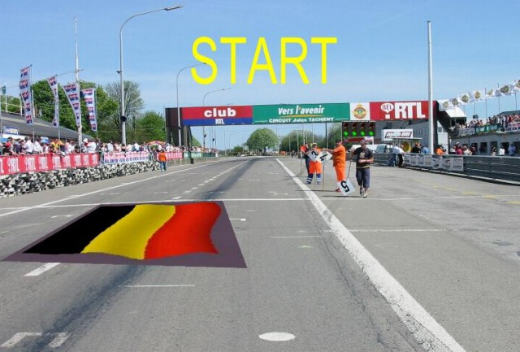
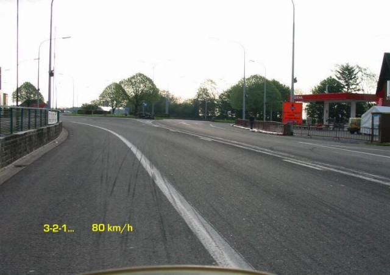
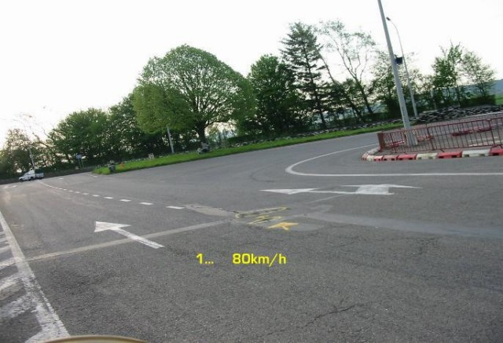
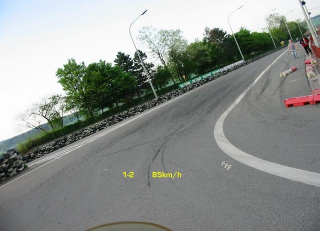
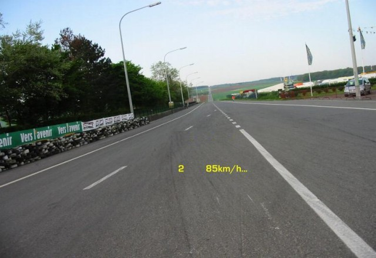
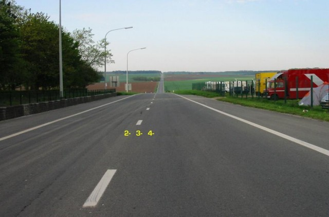
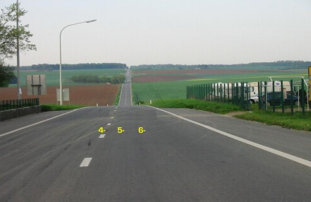
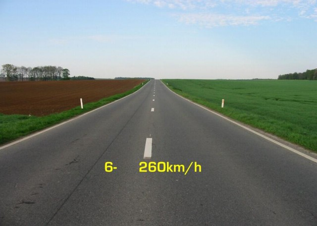

Numbers on the map represent the location where the photographs were taken. Click hyperlinks above to view the photographs.
|| Contents || Start & Virage du Café | Try Marie & Florenne | Hardichamps, Oret & St.-Donat | Chicane Michael Paquay || Home ||
Numbers on the map represent the location where the photographs were taken. Click
hyperlinks above to view the photographs.

1 - Start/Finish

2 - Aproaching Virage du Café du Circuit

3 - Entry of Virage du Café du Circuit

4 - Exit of Virage du Café du Circuit

5 - Rue du Try Marie

6 - Rue du Try Marie

7 - Rue du Try Marie

8 - Rue du Try Marie
Return to racingcircuits.net's Photo Archive Main Index
©2005 Philippe Lardinois, Webmaster: superbiker.com. Reproduced here with kind permission. Lap by Sebastien Le Grelle (Honda Supersport 600)